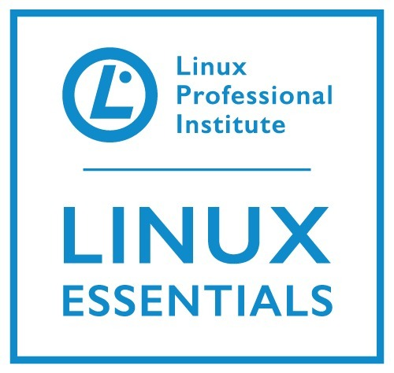

Livia Lima
My name is Livia Nóbrega Lima, I am originally from Brazil and a huge nerd. I love technology and getting my hands into the CLI to try something new. Let me learn and I will never be bored.
My main expertise is network support and administration. I've been working with this in various forms for about 10 years. I executed projects, troubleshooted issues, trained staff and was in charge of governance. I am currently working with storage solutions and getting excited about the products I'm getting my hands on.
I've been publishing technical tutorials on my YouTube channel, including the series for Linux Upskill Challenge.
Getting those back on Sundays: You can watch me studying on a Twitch live streaming every other week at 3 PM BRT.
Outside of technology, I enjoy music, craft beer, comic books and rugby. I keep my stress levels down by doing crossfit and eating pizza.
Awesome stuff I did
More of the shiny badges I got are on Acclaim
Created the Linux Upskill Challenge video-series as a support material for the month-long course on Reddit. As a result, I also became an official mantainer for the project.
Created a static website on AWS from scratch (yes, this one you are seeing right now) as a personal project. Here's how I did it.
Saved 50k USD to client(a major US bank) by applying proper governance to their inventory of network circuits and telephone lines.
Increased to 35% the rate of Cisco certified analysts in the technical staff. Entry level candidates that get in are still trained in the framework I developed.
Transitioned the scope of Voice support to integrate to my former Network team. I worked closely with stakeholders to deploy the process and structured training. I was able to complete the transition in under 1 year, with 200+ technical articles in place and 8+ network analysts fully trained.
Awesome stuff I'm doing right now
I'm currently working as Technical Support Engineer for Dell Technologies, supporting some awesome storage solutions.
Click here
to see my resume/CV. Feel free to distribute it.
Click here to schedule a call with me if you'd like to talk.
Awesome stuff I post
My other interests can be found throughout my social media accounts, each to some degree.Awesome support from you
If you appreciate my work and are feeling generous, you can buy me a beer or donate a dollar.
You can also become my patron if you feel extra generous.